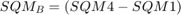
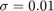

ECE 313 Final Project
TOPIC: Image Processing
Group Members: David Hardy, Francis Chambers
PAPER: Switching Bilateral Filter With a Texture/Noise Detector for Universal Noise Removal
Contents
Problem Formulation
A key problem in image processing is removing noise while keeping the other characteristics of the image intact. Noise is defined as any degradation in the image signal and there are two main types, Gaussian noise and impulse noise. Gaussian noise is linear noise characterized by a normal distribution with mean and variance and is commonly removed with a linear filter. Impulse noise is non-linear noise which corrupts pixels at random and cannot be removed with a linear filter. Instead, a non-linear filter such as a median filter must be used to remove this type of noise. In the case where an image has both Gaussian and impulse noise, neither of the previous filters work and we require a new filter, the switching bilateral filter that can remove both types of noises from an image simultaneously.
Proposed Solution
The framework of the bilateral switching filter can be divided into two stages, detection and filtering. First, the detection scheme used is a sorted quadrant medium vector scheme (SQMV) where we define a (2N+1)x(2N+1) window on the image pixels and divide the window into four sub-windows of size (N+1)x(N+1). Then we calculate the median pixel value of each sub-window
We then define the SQMV as the four median values in the subwindows sorted in increasing order.
where is equal to . After sorting the medians of the subwindows, we notice some of the pixel values are very similar while others may be very different, leading to the formation of clusters. These clusters give us precisely the information about edges and textures in the current windows we are working with and we can define 3 texture/edge cases based on the cluster distribution, either no edge, weak edge, or strong edge and texture. Defining  as the difference in boundary values of the cluster and as the difference in center values of the cluster we see that when is smaller than some threshold parameter which must be experimentally determined, the spread of the medians is small implying the pixel intensities in this window are close to each other so there is no edge. When and then it's a weak edge because two subwindows have drastically different medians but the other two subwindows don't. When and then it's a strong edge because the both sets of subwindows have drastically different medians implying there must be an edge there. Once we've determined whether an edge exists or not the next step is to classify the type of edge it is of which there are 3 types, horizontal, vertical, or diagonal. The cluster of amd the mapping of the four medians to the clusters describe the type of edge in that window. If is clustered as two equal classes and and map to and respectively then we must have a vertical edge. Similarly If is clustered as two equal classes and and map to and respectively then we must have a horizontal edge. Otherwise the must be clustered as two unequal classes such as or and we have the case of a diagonal edge. Having examined all pertinent edge and texture cases, we can now define the reference median which we will use to detect noise by later computing the difference between the reference median and the current pixel value in the filter. Proper computation of the reference median is critical in order to distinguishy noisy pixels from non-noisy pixels correctly. If no edge or weak edge is detected then the majority pixel of that window should be characterized by the medians in the major cluster, that is the average of and . When there is a strong edge or texture in the window, there is no longer a major cluster as all values of now differ greatly from each other so we need a different method of determining our reference median. As we have already determined what type of edge the current pixel is, we can define a directional average of the four pixels in the major pattern
and compare this value to our cluster. If then define the reference median as and if then define the reference median as . Having defined our reference median, the next step is to design the noise detector to determine whether a pixel is noisy or not. To do this we simply compare the difference between the current pixel and the reference median and see if it less than some thresholds and which are experimentally determined constants for impulse and Gaussian noise respectively. In this paper, we set and . Finally, the switching bilateral function must be implemented. Let be the current pixel in the image and let be the pixels in a (2N+1) x (2N+1) window surrounding . Then the SBF filter is defined as
where is the output pixel and
is the spatial Gaussian kernel with variance for edges and for non-edges and
is the radiometric Gaussian kernel with variance which differentiaties this filter from a normal Gaussian filter in that this kernel takes into account radiometric differences (range differences, color intensity, depth, etc.) which is necessary for preserving edges which the standard Gaussian filter does not do. Note I is the output of the noise detector and is equal to if we have impulse noise and if it's Gaussian. The entire purpose of the SQMV noise detection scheme is so we don't need another kernel for removing impulse noise and instead use the reference median instead of the actual pixel value .
Data Sources
To test the bilateral switching filter, we have used the Lena image which is a 512 x 512 pixels 8-bit grayscale image and corrupted it with both Gaussian and salt and pepper (impulse) noise with noise density p = 0.3 (which means 30 percent of the pixels are corrupted with impulse noise) and and . The Lena image is an industry standard in the field of image processing and was used by the authors of the paper as well.
Solution
First we distribute noise over the image.
I = imread('lena_image.png'); I = rgb2gray(I); % Convert to a grayscale image subplot(2,2,1),imshow(I); title('Original Image'); % Add Salt and Pepper Noise (Impulse noise) sp_noise = 0.3; Isp = imnoise(I, 'salt & pepper', sp_noise); subplot(2,2,2),imshow(Isp); title('Salt and Pepper Noise'); % Add Gaussian Noise In = imnoise(Isp, 'gaussian', 0, 0.01); subplot(2,2,3),imshow(In); title('Gaussian and Salt & Pepper Noise'); In = double(In); Inew = In; % Inew will be the image where pixels are modifies
Then we apply the algorithm to filter the image Constants
[m,n] = size(In); N = 2; p = 33; % any value in the range [25,40] is good (according to research paper) Tk1 = 25; % Tk1 = 25 Tk2 = 5 are values provided in the research paper Tk2 = 5; Ic = 0; % SBF constant --> do not confuse with image variables num = 0; denom = 0; for i=N+1:m-N for j=N+1:n-N % Omega0 is the set containing the pixels in the (2N+1)x(2N+1) window % OmegaK, K=1,2,3,4 are sets containing pixels in 4 sub windows [Omega0,Omega1,Omega2,Omega3,Omega4]= getWindowPoints(In,i,j,N); [SQMV,SQMD_B,SQMD_C] = medianVector(Omega1,Omega2,Omega3,Omega4); m1 = median(Omega1(:)); m2 = median(Omega2(:)); m3 = median(Omega3(:)); m4 = median(Omega4(:)); % After sorting the medians of the four sub-windows, some of % the median values are very similar while others are % different, leading to the formation of clusters. SQMR = referenceMedian(SQMV,SQMD_B,SQMD_C,p, m1, m2, m3, m4, i, j, In, N); [S1,S2] = noiseDetector(In(i,j),SQMR,Tk1,Tk2); % Decide if we should filter the pixel or not u = In(i,j); if S1==1 && S2==1 Ic = SQMR; u = SBF(In,i,j,N,Ic); elseif S1==1 && S2==0 Ic=In(i,j); u = SBF(In,i,j,N,Ic); end Inew(i,j) = u; end end
Visualization of Results
In = uint8(In); Inew = uint8(Inew); figure; imshow(I); title('Original Image') figure; imshow(In); title('Image corrupted with Mixed Noise'); figure; imshow(Inew); title('Proposed SBF Filter');
Analysis and Conclusions
From the visualization of the results, it is clear that our filter adequately filters out all the impulse noise while mostly filtering out the Gaussian noise. This is line with the results of the paper which show the proposed filter outperforming other non-linear filters for removing mixed noise such as the trilateral filter, GP filter, and SDROM filter. At the same time, there is a significant amount of Gaussian noise remaining in the filtered image and the theory of bilateral filters show that there are issues dealing with Gaussian noise as the variance is increased. Further improvements to the proposed filter would involve finding a method to reduce this remaining Gaussian Noise.
Custom Source Files/Functions
function [Omega0, Omega1, Omega2, Omega3, Omega4] = getWindowPoints(I,i,j,N) % This function obtains the points in a window given the window parameter N % Parameters: % I: Image % i: y-coordinate of central pixel % j: x-coordinate of central pixel % N: window size parameter % Omega0 is the points in the window % Omega1, Omega2, Omega3, and Omega4 are the sets of points in a subwindow % Omega1, 2, 3, and 4 correspond to 1st, 2nd, 3rd, and 4th the quadrant of Omega0 Omega0 = zeros(2*N+1, 2*N+1); % initialize for s=-N:N for t=-N:N Omega0(s+N+1,t+N+1) = I(i+s,j+t); end end % Define Omega1, Omega2, Omega3, and Omega4 c = N+1; e = 2*N+1; Omega1 = Omega0(1:c, c:e); Omega2 = Omega0(1:c, 1:c); Omega3 = Omega0(c:e, 1:c); Omega4 = Omega0(c:e, c:e); end function [SQMV,SQMD_B,SQMD_C] = medianVector(A,B,C,D) % This function returns the Square Median Vector (SQMV) % SQMD_B and SQMD_C are vectors containing information about the % edge/texture of the image in the window % Parameters: % A, B, C, D are matrices representing OmegaK, for K = 1, 2, 3, 4 m1 = median(A(:)); m2 = median(B(:)); m3 = median(C(:)); m4 = median(D(:)); M = [m1, m2, m3, m4]; SQMV = sort(M); SQMD_B = SQMV(4) - SQMV(1); SQMD_C = SQMV(3) - SQMV(2); end function [SQMR] = referenceMedian(SQMV,SQMD_B,SQMD_C,p, m1, m2, m3, m4, i, j, I, N) %This function finds the reference median dav = 0; if (SQMD_C <= p) %no edge/weak edge SQMR = (SQMV(2) + SQMV(3))/2; else %strong edge %determine what type of edge if(m1 == SQMV(1) && m2 == SQMV(2) && m3 == SQMV(3) && m4 == SQMV(4)) % horizontal edge for n=-N:N if(n ~= 0) dav = dav + I(i, j+n); end end elseif(m2 == SQMV(1) && m3 == SQMV(2) && m1 == SQMV(3) && m4 == SQMV(4)) % vertical edge for n=-N:N if(n ~= 0) dav = dav + I(i+n, j); end end else %diagonal edge% dav = dav + I(i-1, j+1) + I(i-1, j-1) + I(i+1, j-1) + I(i+1, j+1); end dav = dav/4; if(dav >= SQMV(3) && dav <= SQMV(4)) SQMR = SQMV(3); else SQMR = SQMV(2); end end end function [S1,S2] = noiseDetector(x,SQMR,Tk1,Tk2) % This function returns S1 and S2 % Parameters: % x: represents the current pixel (x(i,j)) % SQMR: Reference median % Tk1, Tk2: Threshold for noise determined experimentally % S1, S2 = 1 implies impulse noise % S1=1, S2=0 implies Gaussian noise % S1=0, S2=0 implies noise free S1 = 0; S2 = 0; if abs(x-SQMR) >= Tk1 % Impulse noise S1 = 1; S2 = 1; elseif abs(x-SQMR) >= Tk2 % Gaussian noise S1 = 1; S2 = 0; end end function [u] = SBF(I,i,j,N,Ic) % This function returns the new value held by the pixel x (x is filtered to % become u) % Parameters: % I: Image % i: y-coordinate of central pixel % j: x-coordinate of central pixel % N: window size parameter % Ic: constant used for filtering (not to be confused with the Image % variable) num = 0; den = 0; for s=-N:N for t=-N:N num = num + WG(i,j,i+s,j+t)*WSR(double(I(i+s,j+t)),double(Ic))*double(I(i+s,j+t)); den = den + WG(i,j,i+s,j+t)*WSR(double(I(i+s,j+t)),double(Ic)); end end u = num/den; end function [value] = WG(i,j,s,t) sigma_s = 1; % spatial variance chosen in research paper num = (i-s)^2 + (j-t)^2; den = 2*(sigma_s)^2; value = exp(-num/den); end function [value] = WSR(x,Ic) sigma_r = 40; % relative pixel variance chosen in research paper num = (Ic-x)^2; den = 2*(sigma_r)^2; value = exp(-num/den); end